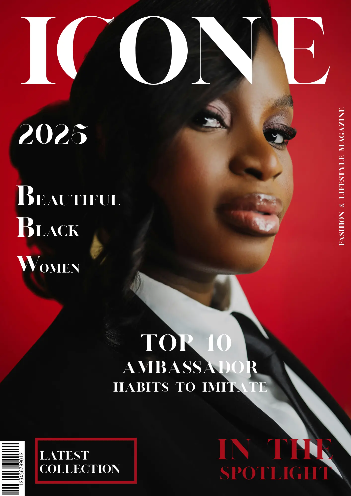
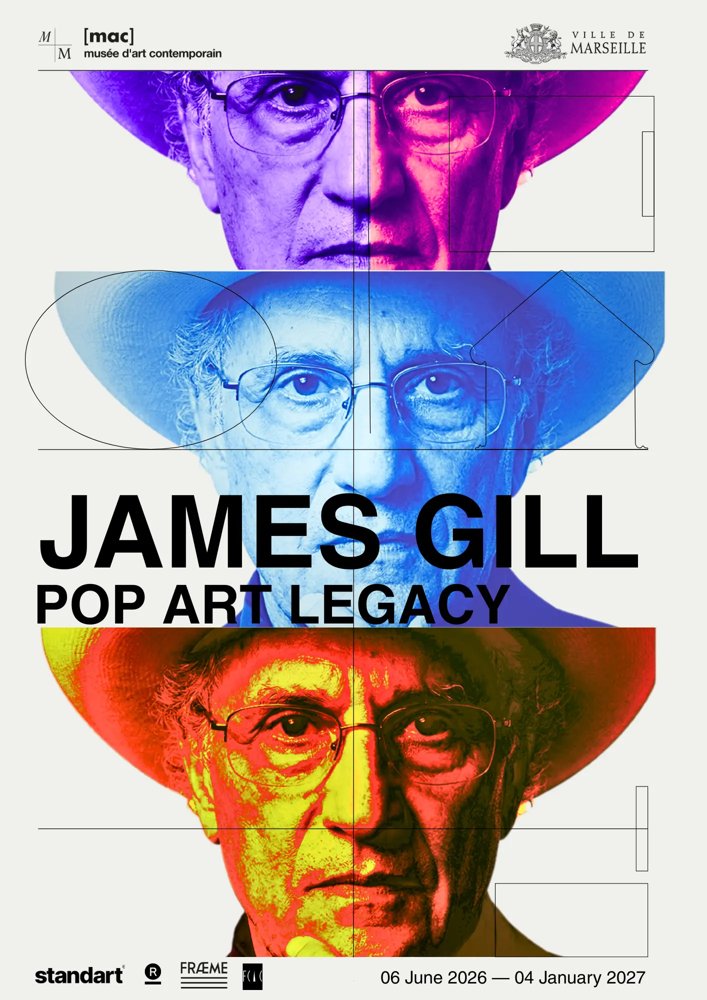

Couverture Magazine ICONE
Mise en page, typographie et composition photographique pour un rendu éditorial professionnel.
Designer Graphique · Développeur Web · Direction Artistique
Étudiant en BUT MMI, je crée des identités visuelles percutantes, des interfaces soignées et des supports de communication qui marquent les esprits.

Designer Graphique
Guadeloupe, France
À propos
Étudiant en BUT Métiers du Multimédia et de l'Internet, je me spécialise en design graphique et communication visuelle. Mon approche mêle créativité, rigueur typographique et sensibilité esthétique pour concevoir des visuels et des identités qui racontent une histoire.
Passionné par la direction artistique, je m'investis autant dans la recherche UX que dans la création d'affiches, de logos et d'univers visuels cohérents. L'accessibilité est au cœur de ma démarche.
Réalisations

Mise en page, typographie et composition photographique pour un rendu éditorial professionnel.

Expérimentation créative de design pour un concert fictif de l'artiste Tame Impala.

Affiche d'exposition fictive, triptyque Pop Art au [mac] Marseille.
Savoir-faire